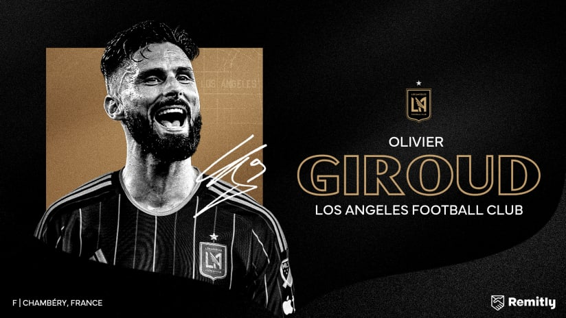

Palmares Olivier Giroud

Récompenses et réalisations :
-2012 : Remporte le championnat de France (Ligue 1) avec Montpellier, marquant 21 buts dans la saison
-2014 : Gagne la FA Cup avec Arsenal
-2015 : Remporte à nouveau la FA Cup avec Arsenal
-2017 : Troisième FA Cup avec Arsenal
-2018 : Champion du monde avec l’équipe de France, même s’il ne marque pas, il est crucial dans le jeu de l’équipe
-2019 : Vainqueur de la Ligue Europa avec Chelsea, dont il est le meilleur buteur de la compétition avec 11 buts
-2021 : Participe à l'Euro avec l'équipe de France et rejoint l'AC Milan
-2022 : Remporte la Serie A avec l'AC Milan, offrant des performances décisives en fin de saison
-2022 : Lors de la Coupe du Monde au Qatar, il devient le meilleur buteur de l’histoire des Bleus en dépassant le record de Thierry Henry avec 53 buts